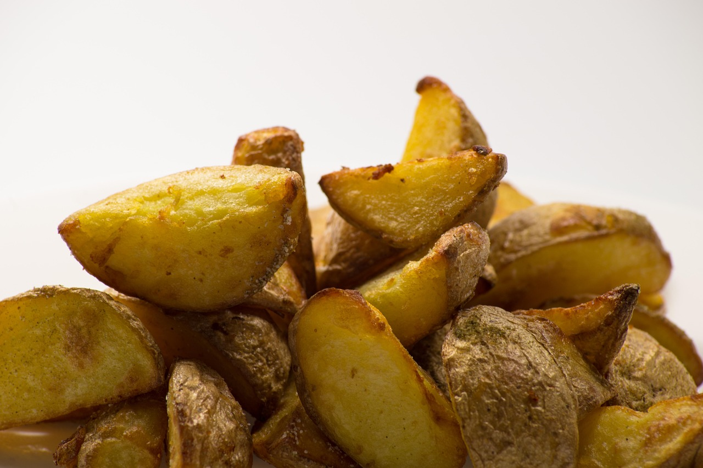
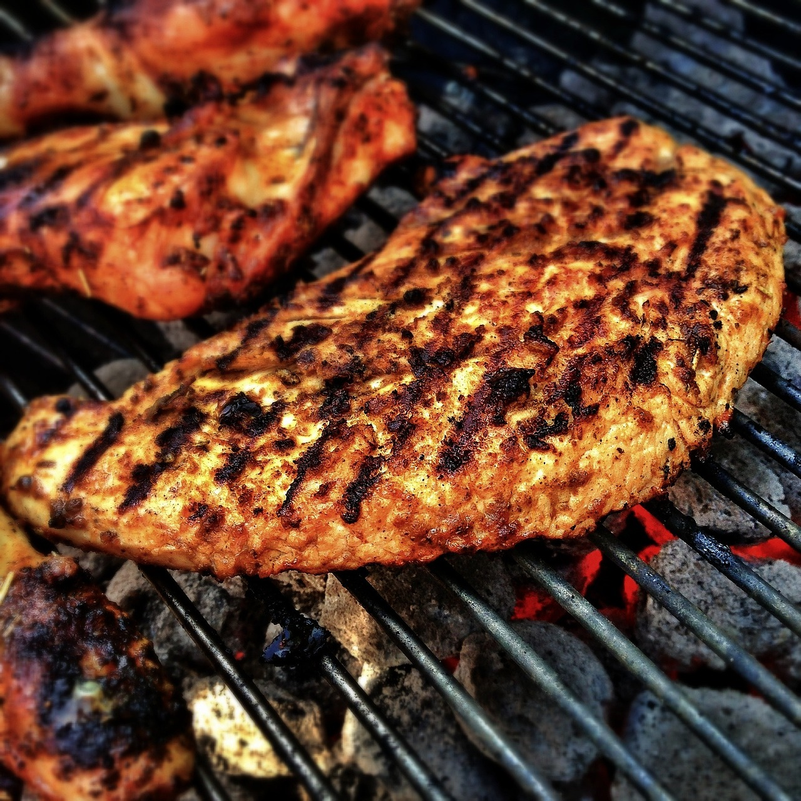

02 / 08
02 / 08بدّلي المقليات والدجاج

البديلبطاطس بالفرن
≈ 160 سعرة
←
نفس الطعم المقرمش — قطّعيها أصابع، رشة زيت وبابريكا، ٢٥ دقيقة بالفرن.

البديلدجاج مشوي
≈ 190 سعرة
←
البروتين نفسه بنصف السعرات — تتبيلة لبن وليمون وبهارات تكفي.